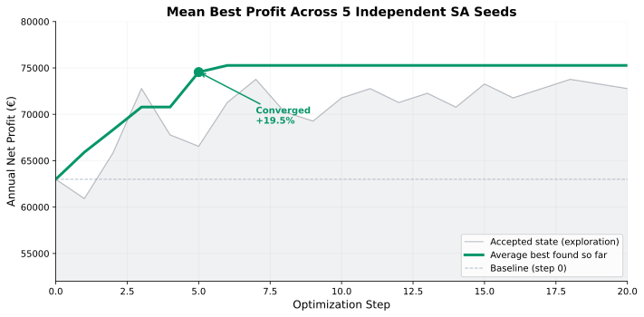
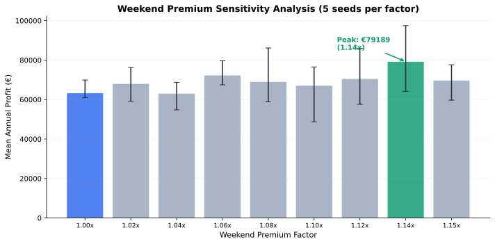

Agent-based simulation of pricing, fleet allocation, and demand dynamics
We ran 5 independent optimization seeds, each exploring 20 pricing configurations via Simulated Annealing. Every configuration was evaluated through a full-year simulation with 2,000 customer twins and 81 vehicles across 35 Aachen stations.
| Metric | Baseline | Optimized | Change |
|---|---|---|---|
| Net Profit | €62.999 | €75.270 | +€12.271 (19.5%) |
| Revenue | ~€343.320 | €410.190 | +€66.871 |
| Cost | ~€286.925 | €342.812 | +€55.886 |
The chart shows the average best profit found so far across all 5 seeds at each step. The faint dashed line shows the accepted state (exploration noise); the green line shows the best configuration discovered.

All seeds converge by step 5. The optimizer finds the sweet spot quickly and spends remaining steps confirming.
| Seed | Baseline (step 0) | Final Best (step 20) | Absolute Gain | % Gain |
|---|---|---|---|---|
| Seed 0 | €70.809 | €74.409 | +€3.600 | +5.1% |
| Seed 1 | €42.750 | €79.689 | +€36.939 | +86.4% |
| Seed 2 | €74.577 | €74.577 | +€0 | +0.0% |
| Seed 3 | €60.454 | €75.674 | +€15.221 | +25.2% |
| Seed 4 | €66.407 | €72.001 | +€5.594 | +8.4% |
| Mean | €62.999 | €75.270 | +€12.271 | +19.5% |
We tested 9 weekend pricing multipliers (1.00× to 1.15×) with 5 independent seeds per factor. The chart shows mean profit with min/max range.

The peak occurs at 1.14× (≈13% weekend premium), yielding €79.189. At this level, weekend demand absorbs the price increase without significant volume loss.
| Factor | Mean Profit | Min | Max | Vs Baseline |
|---|---|---|---|---|
| 1.00× | €63.282 | €60.990 | €69.899 | +€282 |
| 1.02× | €68.088 | €59.139 | €76.259 | +€5.088 |
| 1.04× | €63.066 | €54.773 | €68.724 | +€67 |
| 1.06× | €72.342 | €67.462 | €79.628 | +€9.342 |
| 1.08× | €69.001 | €58.892 | €86.139 | +€6.001 |
| 1.10× | €67.112 | €48.743 | €76.519 | +€4.113 |
| 1.12× | €70.574 | €57.613 | €85.920 | +€7.575 |
| 1.14× ★ | €79.189 | €64.185 | €97.468 | +€16.190 |
| 1.15× | €69.643 | €59.704 | €77.620 | +€6.644 |
Current fleet distribution vs proportional allocation matching each station's historical booking share. Zero cost — no new vehicles, no pricing changes.
Redistributing vehicles to match observed demand increases profit by 26%. Current allocation under-serves high-demand stations while over-stocking low-traffic locations.
Deploy in two phases:
Risk note: The 13% weekend premium carries higher variance across seeds (±€16.642 range). Recommend A/B testing at 3–5 stations before network-wide rollout. Fleet reallocation is lower risk — historical demand is already proven.
All results are generated from first-principles simulation, not extrapolation. Below is the actual runtime for the complete analysis suite.
| Experiment | Simulations | Runtime | % of Total |
|---|---|---|---|
| SA Convergence (5 seeds × 20 steps) | 100 | ~355 s | 81% |
| Weekend Sensitivity (9 factors × 5 seeds) | 45 | ~78 s | 18% |
| Fleet Scenarios (current + proportional) | 2 | ~6 s | 1% |
| Total | 147 | 439 s (7.3 min) | 100% |
Each optimization step evaluates one complete simulated year with 2,000 customer twins and 81 vehicles across 35 Aachen stations. Simulated Annealing proposes random pricing perturbations; better configurations are always accepted, worse ones may be accepted with probability that decreases over time (temperature cooling). This allows broad early exploration, then refinement.
We ran 5 independent seeds to account for simulation stochasticity. The mean best profit (green line) is the primary metric. Results are actual optimizer outputs, not projections.